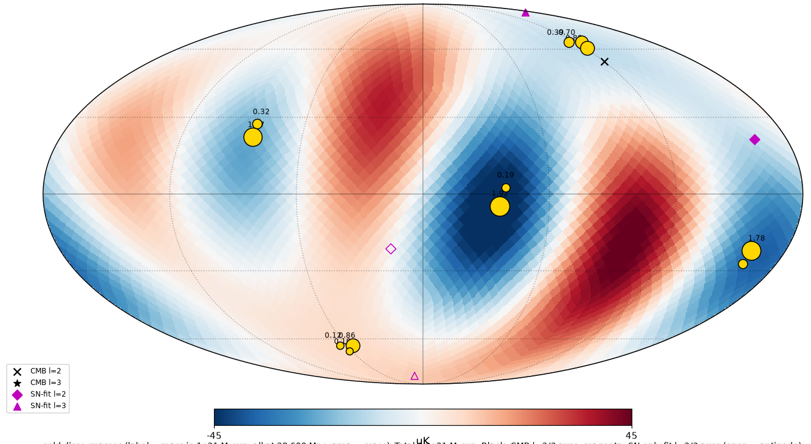

A first test: a dozen masses and the CMB
The cosmic microwave background (CMB), the faint glow that fills the sky, has an odd pattern on its largest scales. Its two broadest patterns, known as the quadrupole and the octupole, point in nearly the same direction, and Planck’s own analysis found that unlikely to happen by chance.
A sky-map test asked whether masses beyond our horizon, pulling with ordinary gravity, could produce that pattern. About 12 masses, together roughly 2% of the matter in the observable universe, reproduce it.
That result shows the pattern can be produced this way. It does not confirm EGC: it is a fit of 12 masses to 12 numbers. The same masses also predict a signal in supernova distances about 1,000 times too faint for today’s best supernova survey, Pantheon+, to detect, so supernovae cannot settle the question yet.

Why the observable universe looks round
We sit inside a sphere of last scattering, the shell the CMB’s light set out from. Look in any direction and we see out to that same shell, so the observable universe appears round.
The masses beyond it do not need to be spread evenly for it to stay that way. Each pulls with a strength that depends on its distance and its direction from us. Together these different pulls smooth the net force into a sphere, even when the masses are bigger in some directions than in others. Direction cancels; magnitude doesn’t have to.
Further out, faster
Where do all those pulls balance? EGC proposes that the net-zero point is with us, in our own galaxy. A galaxy away from the centre feels a net tug, and the further out it is, the stronger the difference in pull and the faster it accelerates. EGC predicts that this is the pattern the redshift data show. That calculation has not been run yet.
A new look at the Hubble tension
Measurements of the expansion rate based on the early universe give a lower number, and measurements based on the nearer, later universe give a higher one. In the standard model that disagreement is a contradiction, known as the Hubble tension.
EGC reads it as the model’s prediction: further out accelerates faster. In this model there is one gradient of pull, and both measurements fall out of it, so the tension is resolved. Like the point above, this is the model’s claim, still to be tested against the data.
Where the standard model struggles
The standard model of cosmology, Lambda CDM (ΛCDM), does not fit the data on its own. Three problems stand out: the Hubble tension; galaxies in the early universe that look too massive for their age; and the lithium problem, where the lithium found in the oldest stars does not match what the standard model predicts.
An open question: can the outside field stay still?
Over cosmic time, masses beyond our view may collapse or merge, and that would shift their pull. Can the outside field then be treated as static? The proposed answer is the same smoothing: the net pull is averaged into a sphere, so it should hold steady even as individual masses change. Whether the size of the unevenness this predicts in the sky matches what we observe still needs checking.
A note on wording
In EGC discussion, “right” means the best current fit, not proven.